ECOCSTEM
Ecosystem x Computer Science
01 AWARENESS ~ Websites and applications that raise awareness
Most people care about the environment but don't know what's actually happening to it because the data exists but isn't accessible. As a developer, you can bridge that gap by turning complex scientific datasets into websites or applications that anyone can understand and feel.
01Interactive Maps
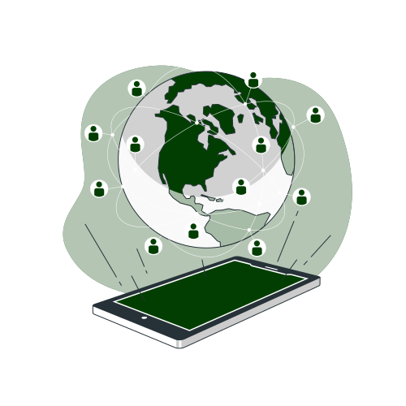
Build web maps that let users explore deforestation, pollution levels, or biodiversity hotspots in their own region. When people can see what's happening in their backyard, they're far more likely to act on it.
02Infographic Websites
Infographics make science and researches easy to understand. A well-made infographic page about a threatened ecosystem can spread awareness and form communities around an issue.
03Species Directory
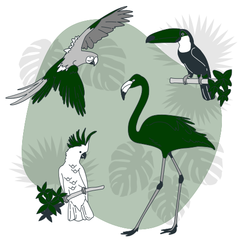
Many places have no publicly accessible, well-designed directory of their local plants and animals. Building a searchable, filterable database or site, even within a small single location provides knowledge and shares awareness to others.
04Eco Challenge Apps
Apps that turn sustainable habits into challenges like reducing plastic use, going car-free, and planting, where friends compete, encourage each other, and share their results publicly.
05Pest Management System
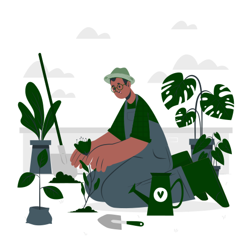
Apps that analyze a farmer's crop type, pest pressure, and local ecosystem profile and recommend the least harmful pest control approach first, only escalating to chemical options when biological and physical methods have been exhausted and documented.
02 DETECTION ~ ML and technology that detects environmental threats
Machine Learning and Technology allow to automate repetitive scanning and detection work that conservation teams and researchers can spend their time responding and focus on other tasks and important decision-making.
01Species Identifier
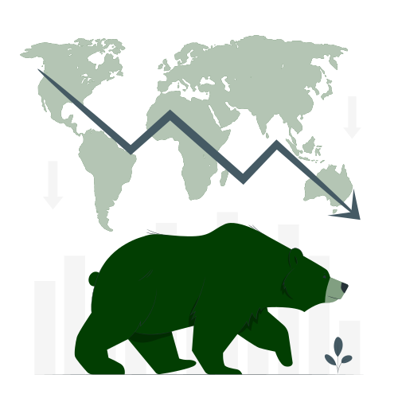
Computer vision models trained on labeled datasets can automatically classify species in each photo, flag rare or endangered sightings, and estimate population trends, replacing months of manual sorting with near-instant automated analysis at scale.
02Wildfire Predictor
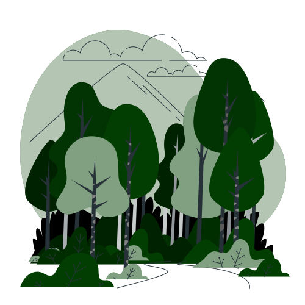
Models trained on drought levels, wind patterns, and moisture data can generate daily fire risk maps for agencies. Instead of reacting after a fire has already spread, teams can move equipment to the right areas and warn communities before anything ignites.
03Ocean Trash Detector
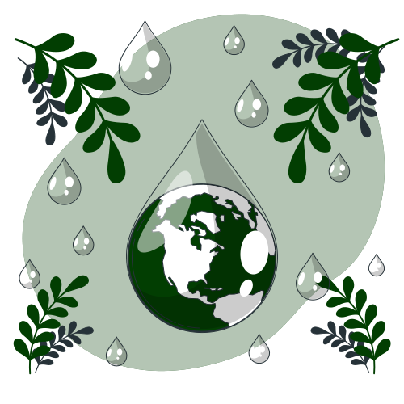
Object detection models can identify large plastic accumulations on the ocean surface. This lets cleanup crews target their efforts precisely rather than searching blindly, improving the efficiency and total geographic coverage of ocean trash removal operations.
04Soil Quality Scanner
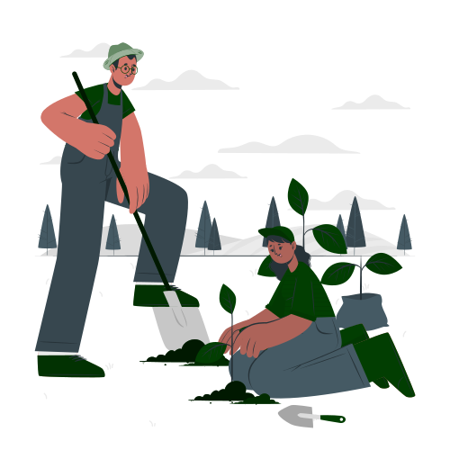
Sensor models that scan farmland for early signs of erosion, compaction, and desertification, alerting land managers before the damage becomes visible on the ground and too costly to reverse.
05Water Quality Scanner
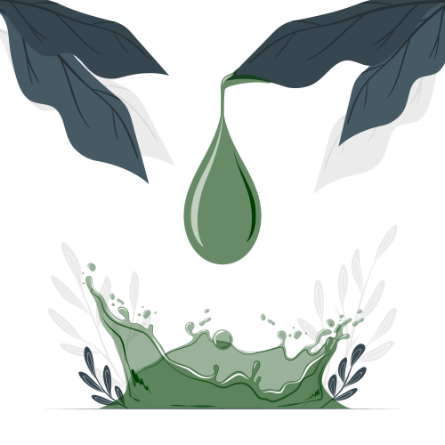
Sensor models that continuously monitor chemical and biological indicators on water bodies and fire an automated alert the moment any reading moves outside safe parameters, catching pollution events within minutes of them beginning rather than days later.
03 PREVENTION ~ Systems that prevent damage
Detection tells you what is already happening. Prevention stops it before it starts. Computer Scientists may help conservation by building infrastructure that makes harmful activities harder to carry out and faster to stop before damage occurs.
01Wildlife Trade Tracker
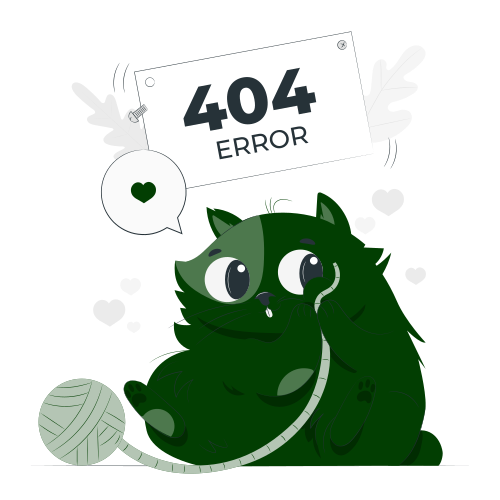
Systems that monitor online marketplaces for listings of protected and illegal to be sold species. These systems may trigger instant takedowns before a sale is completed and alert wildlife crime units.
02Drone Patrol
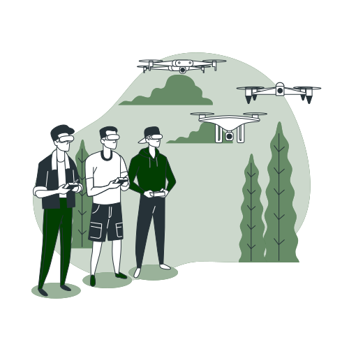
Automated drones that are programmed to patrol protected zones continuously, covering large and hard-to-reach areas that ground teams cannot monitor easily. They detect illegal activities like illegal logging in forest borders and alert authorities before any significant damage is done.
03Marine Fence System
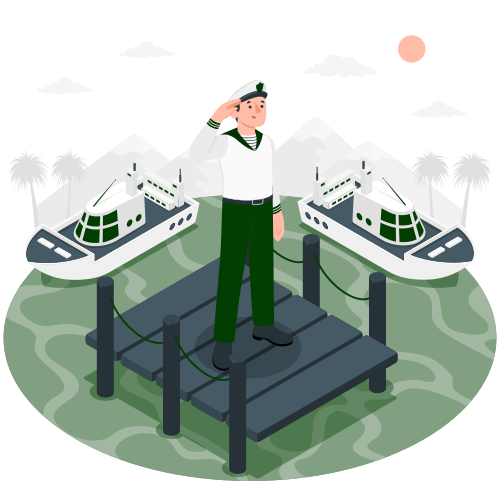
Smart fences using sensors to instantly identify when a protected marine boundary has been crossed like an unauthorized fishing vessels dropping nets, which sends quick and automated alerts with the exact location to the authorities and coastguards
04Contaminant Release Blocker
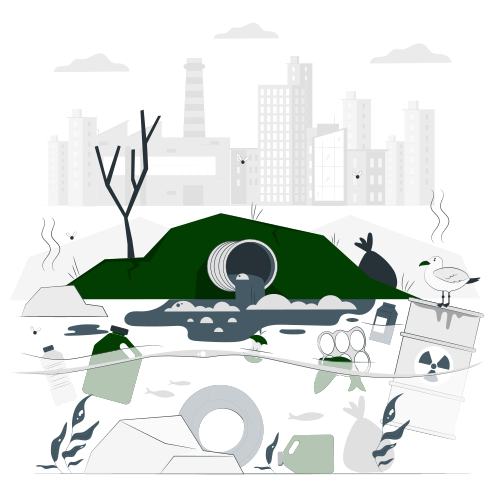
Sensors installed at factory discharge points automatically gets blocked the moment pollution levels exceed legal limits, stopping contamination before it ever reaches the water.
05Illegal Mining Detector
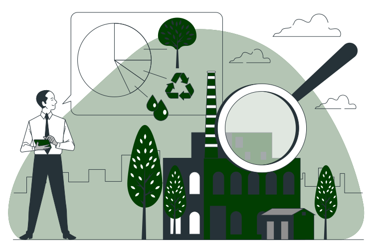
Monitoring systems that detect unusual surface disturbance, discoloration of water, and vegetation loss signatures of illegal mining operations and alert authorities as early as possible rather than months later when the damage has already spread widely.